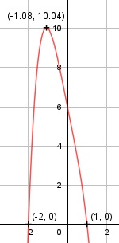

Aufgabe 59 f(x) = -x4 - 5x + 6 f'(x) = -4x3 - 5, f''(x) = -12x2, f'''(x) = -24x Definitionsbereich: -∞ < x < ∞ Wertebereich: -∞ < f(x) ≤ 4 Asymptoten: - Symmetrie: - Nullstellen: -x4 - 5x + 6 = 0 Durch Probieren gefunden x1 = 1 Hornerschema: -1 0 0 -5 6 x1 = 1 -1 -1 -1 6 ----------------------------------- -1 -1 -1 -6 0 Polynomdivision: -x4 - 5x + 6 : (x - 1) = -x3 - x2 - x - 6 -(-x4 + x3) ----------- -x3 - 5x + 6 -(-x3 + x2) ------------ -x2 - 5x + 6 -(-x2 + x) ------------ -6x + 6 -(-6x + 6) ----------- 0 -x3 - x2 - x - 6 = 0 Durch Probieren gefunden x2 = -2 - 1 -1 -1 -6 x2 = - 2 2 -2 6 ----------------------------- -1 1 -3 0 Polynomdivision: -x3 - x2 - x - 6 : (x + 2) = -x2 + x - x - 3 -(-x3 - 2x2) ------------ x2 - x - 6 -(x2 + 2x) ----------- -3x - 6 -(-3x - 6) ---------- 0 -x2 + x - 3 = 0 | *(-1) x2 - x + 3 = 0 p, q - Formel p = -1, q = 3 x1,2 = x1,2 = 0,5 ± x1,2 = 0,5 ± --> keine Lösung --> keine weiteren Nullstellen N1 (1|0), N2(- 2|0) Schnittpunkt mit der y-Achse: f(0) = -04 - 5 * 0 + 6 = 6 Sy(0|6) Extrempunkte: -4x3 -5 = 0 |+4x3 4x3 = -5 |:4 x3 = -1,25 |
x = -1,08, f(-1,08) = -(-1,08)4 - 5 * (-1,08) + 6 = 10,04 f''(-1,08) = - 12 * (-1,08)2 < 0 --> Hochpunkt (-1,08|10,04) Wendepunkte: -12x2 = 0 |:(-12) x2 = 0 x1,2 = 0, f(0) = 6 f'''(0) = -24 * 0 = 0 --> kein Wendepunkt Graph: 3 